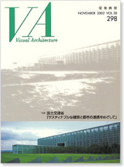

当サイトはJavaScriptをonにしてご覧ください。

NOVEMBER 2002 VOL.39 298
特集 国土交通省
「サスティナブルな建築と都市の連携をめざして」
定価 2,200円（税込）
ISBN 4-901772-06-6
寄稿
公共建築に期待すること
香山壽夫
公共建築の保存・活用について
鈴木 博之
公共建築にのぞむもの
古谷誠章
都市・まちづくりにおける「公共」建築の意味
加藤 源
福祉に携わる立場から公共建築に期待すること－公共建築物をより安全に－
白石真澄
官庁営繕 この10年の施策
入札・契約制度の改革
まちづくり
国家機関移転
PFI（Private Finance Initiative）
官庁施設の位置、規模及び構造に関する基準
官庁施設の基本的性能を規定
耐震・安全対策
バリアフリー化社会への取り組み
－高度なバリアフリー化庁舎の建設－
環境負荷低減への取組み
室内空気環境対策
コスト縮減
歴史的建築物の保存活用
官庁施設の顧客満足度の評価
設計者選定方式の確立
工事共通仕様書の標準化・性能規定化
工事監理の分離委託の導入
建設リサイクルの推進
計画的な保全とストックマネジメント
作品紹介
さいたま新都心合同庁舎
岡崎地方合同庁舎
釧路合同庁舎
二戸合同庁舎
国際子ども図書館
神戸税関本関
新宿御苑旧御涼亭
新宿御苑旧洋館御休所
京都御苑「拾翠亭」
神戸防災合同庁舎
中央合同庁舎第２号館（高層棟）
警察総合庁舎
横浜海上防災基地
津第1地方合同庁舎（耐震改修）
国立西洋美術館
2000九州・沖縄サミットプレスセンター
国際障害者交流センター（愛称ビッグ・アイ）
大阪労災特別介護施設
愛媛労災特別介護施設
宮城労災特別介護施設
岩見沢労働災害特別介護施設
心身障害児総合医療療育センター職員養成棟
日本点字図書館
国立広島原爆死没者追悼平和祈念館
国立国会図書館関西館
新国立劇場
東京国立博物館法隆寺宝物館
東京国立文化財研究所
東京国立博物館平成館
国立科学博物館たんけん館
国立公文書館分館
地図情報館情報提供館
国立横浜国際会議場
国立オリンピック記念青少年総合センター
警察大学校
国土交通大学校
税務大学校和光校舎
司法研修所
国立妙高少年自然の家
スーパークリーンルーム産官学連携研究棟
産業技術総合研究所臨海副都心センター
国立保健医療科学院（旧国立公衆衛生院）
水産総合研究センター中央水産研究所
家畜改良センター熊本牧場
科学警察研究所
福井春山合同庁舎
宇部地方合同庁舎
佐渡相川地方合同庁舎
長崎家庭・簡易裁判所
新潟地方法務局新発田支局
南大東島地方気象台
八幡浜公共職業安定所
PROJECTS
VAコラム：編集顧問インタビュー 「人から人へ」Vol.19 横沢国夫（大成建設専務設計本部長）